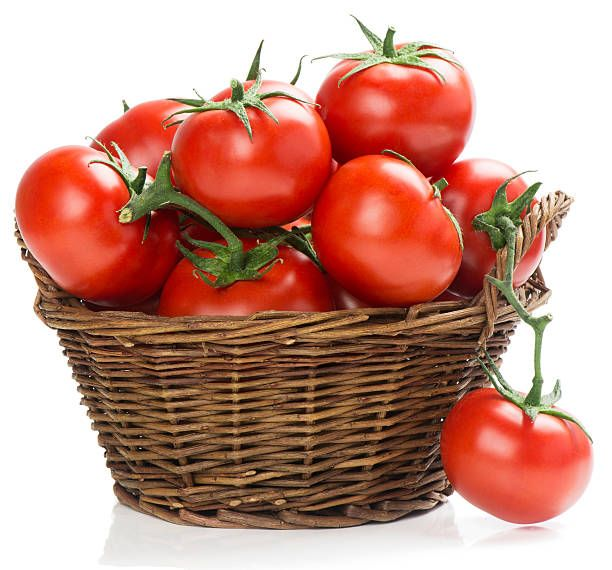
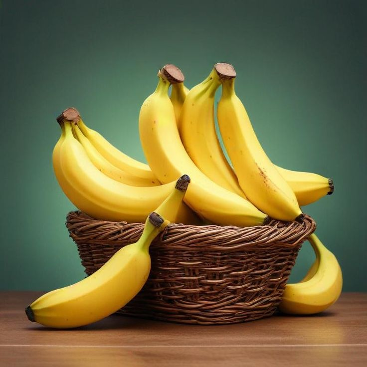

Our Mission
Our mission is to make it easier for local farmers to showcase their products and connect with customers through a simple and reliable digital platform. We want to help farmers reach more people and make finding fresh farm products easier.


Our Vision
Our vision is to support a connected agricultural community where local farmers can reach more customers and people can discover fresh farm products more easily.
Why Choose Us
Support Local Farmers
We help local farmers showcase their products and reach more customers.
Safe & Secure Transactions
We encourage clear communication and safer interactions between farmers and customers.
Local Products
Discover fresh agricultural products offered by local farmers.
Stronger Communities
We build connections between farmers, households and local businesses.